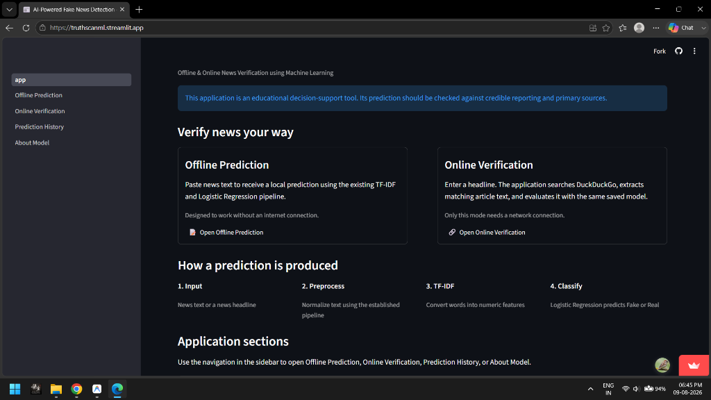
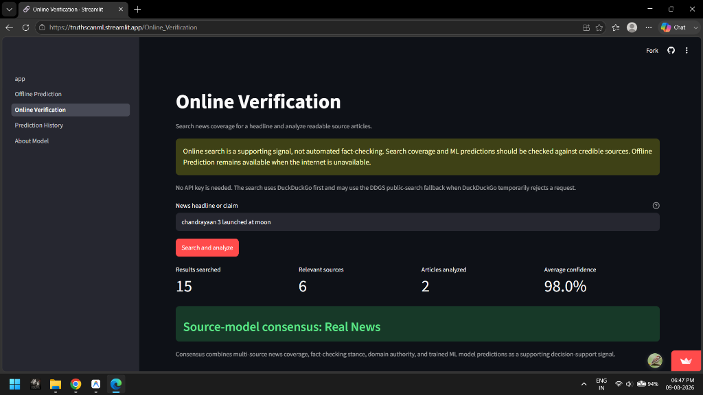
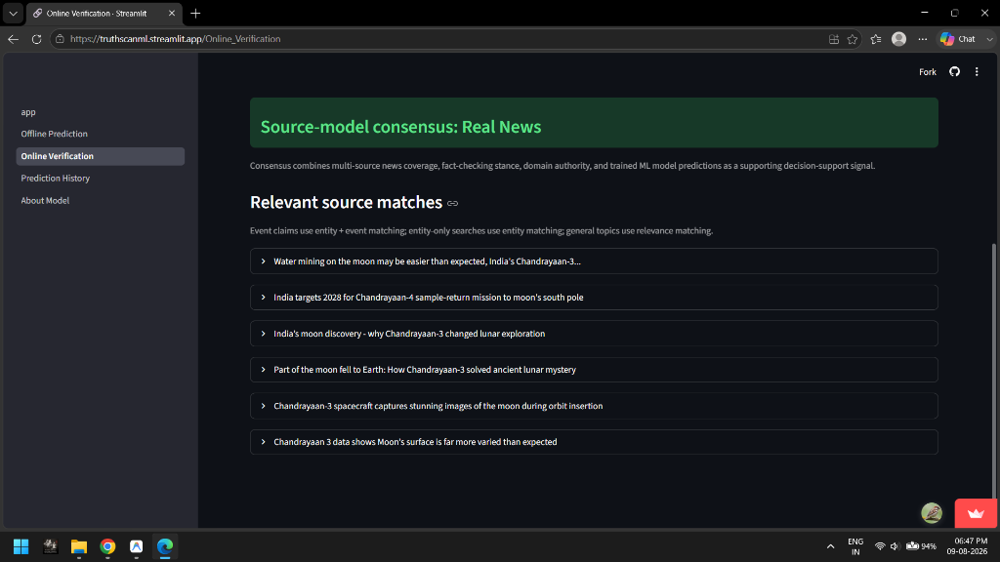
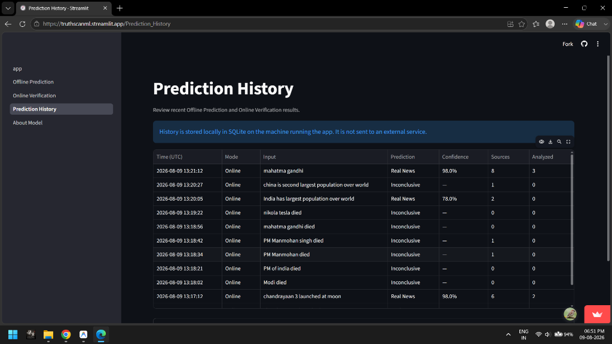

This is to certify that the Summer Internship Report entitled "AI-Powered Fake News Detection System Using Python" submitted by Harsh Tiwari, a student of Bachelor of Technology (B.Tech.) in Information Technology (Roll No.: 2303610130026), is a bonafide record of the work carried out during the 40-day Summer Internship under our guidance and supervision.
The project has been completed in partial fulfillment of the requirements for the award of the Bachelor of Technology degree. During the internship, the student demonstrated sincerity, dedication, and technical competence while designing and developing the project using Machine Learning and Python programming concepts. The work presented in this report is original and has not been submitted, either wholly or partly, to any other university or institution for the award of any degree, diploma, or certificate.
We wish the student every success in future academic pursuits and professional endeavors.
Faculty Guide / Trainer
Signature: ____________________
Name: Mr. Raju DevNath
Date: ____________________
Head of Department
Signature: ____________________
Department of Information Technology
External Examiner
Signature: ____________________
I hereby declare that the Summer Internship Report entitled "AI-Powered Fake News Detection System Using Python" submitted by me is an original piece of work carried out during my 40-day industrial internship.
The project has been completed under the guidance of my mentor Mr. Raju DevNath and faculty members of the Department of Information Technology.
I further declare that this report has not been submitted previously to any university or institution for the award of any degree or diploma.
Place: Lucknow
Date: ____________________
Signature of Student
Harsh Tiwari
Roll No.: 2303610130026
I express my sincere gratitude to my internship mentor, Mr. Raju DevNath, and the Department of Information Technology, R.R. Institute of Modern Technology (RRGI), Lucknow, for their valuable guidance and continuous encouragement throughout the internship period.
I am thankful to our college management for providing the opportunity to work on a real-world Machine Learning project that significantly enhanced my technical, analytical, and software engineering skills.
I would also like to thank my friends and family for their constant motivation and support during the successful completion of this internship.
Finally, I express my gratitude to everyone who directly or indirectly contributed to the successful completion of this project.
Harsh Tiwari
Roll No.: 2303610130026
The AI-Powered Fake News Detection System (TruthScanML) is a Python-based machine learning application developed to automate news credibility assessment and provide intelligent, multi-signal verification for digital news claims.
The project enables a user to input a headline or article text, classify its authenticity using an offline Machine Learning pipeline (TF-IDF Vectorizer + Logistic Regression), fetch live web coverage via DuckDuckGo and Google News RSS APIs, and evaluate source-model consensus using a multi-signal stance engine.
The system enforces input text validation, parses unstructured web content cleanly, manages persistent local SQLite prediction history records, and displays transparent relevance metrics.
The project has been developed using the Python programming language and demonstrates the practical implementation of Object-Oriented Programming concepts, text cleaning pipelines, Machine Learning algorithms, web scraping, and Streamlit user interaction.
This internship project helped in understanding the software development life cycle, problem-solving techniques, coding standards, debugging, testing, and documentation.
| Chapter | Title | Page |
|---|---|---|
| 1 | Introduction & Need of the Project | 7 |
| 2 | Institute / Training Profile (RRGI Lucknow) | 10 |
| 3 | Internship Objectives & About Project | 13 |
| 4 | Technologies Used & SDLC Model | 16 |
| 5 | Project Description & System Design | 20 |
| 6 | Existing System & Limitations | 23 |
| 7 | Proposed System & Major Features | 25 |
| 8 | Requirement Analysis (Hardware & Software) | 27 |
| 9 | Project Architecture & System Diagrams | 30 |
| 10 | Program Structure & Code Explanations | 38 |
| 11 | System Testing & Verification Results | 46 |
| 12 | Detailed 40-Day Internship Work Summary | 52 |
| 13 | Conclusion | 58 |
| 14 | References | 59 |
| 15 | Appendix & Deployed UI Screenshots | 60 |
| 16 | Final Project Summary & Achievements | 61 |
In the modern digital era, the rapid proliferation of social media platforms, blogs, and online news portals has revolutionized content publishing. However, it has also led to an alarming increase in fake news, misinformation, clickbait headlines, and digital hoaxes. Misinformation distorts public perception, impacts financial markets, and poses significant societal challenges.
The AI-Powered Fake News Detection System (TruthScanML) developed during this internship is a software application designed to classify news articles as Real News or Fake News using Machine Learning algorithms and live web verification.
Technology has transformed news verification by replacing manual, paper-based investigation with computerized systems. Modern software allows institutions to evaluate news articles, calculate machine learning authenticity scores, and cross-verify claims against live web coverage securely while minimizing human error.
The media monitoring sector requires software applications that simplify news, article, and rumor management while ensuring accuracy, security, and reliability. The major needs of the project are:
The system provides facilities such as News Text Parsing, Local Offline Prediction, Machine Learning Confidence Score Calculation, Live Web Search, Multi-Signal Stance Consensus Analysis, Publisher Domain Authority Recognition, SQLite Prediction History Logging, and Report Exporting.
The Summer Internship was conducted under the academic guidance of the Department of Information Technology at R.R. Institute of Modern Technology, Lucknow (R.R. Group of Institutions - RRGI), affiliated to Dr. A.P.J. Abdul Kalam Technical University (AKTU), Lucknow.
| Institution | R.R. Institute of Modern Technology (RRGI), Lucknow |
|---|---|
| Affiliation | Dr. A.P.J. Abdul Kalam Technical University (AKTU), Lucknow |
| Department | Department of Information Technology |
| Student Name | Harsh Tiwari (Roll No.: 2303610130026) |
| Degree & Branch | B.Tech. in Information Technology |
| Trainer / Mentor | Mr. Raju DevNath |
| Training Program | Summer Industrial Training on AI & Machine Learning |
| Duration | 40 Days |
The training combined conceptual sessions with a continuous hands-on project component, ensuring that every Python concept covered in class was immediately applied inside the AI Fake News Detection project.
| Field | Details |
|---|---|
| Internship Title | Summer Internship on AI Application Development |
| Project Title | AI-Powered Fake News Detection System Using Python |
| Internship Duration | 40 Days |
| Programming Language | Python |
| Development Environment | VS Code, PyCharm, Windows Operating System |
| Technologies Used | Python, OOP Concepts, Scikit-Learn, TF-IDF, SQLite, Streamlit |
The AI-Powered Fake News Detection System is an intelligent Python application developed to automate news credibility assessment and live online verification.
The primary objectives of the internship were:
| Tool | Purpose |
|---|---|
| Python 3.10+ | Core Programming Language |
| VS Code / PyCharm | Development Environment & IDE |
| Scikit-Learn / Joblib | TF-IDF Vectorizer & Logistic Regression Classifier |
| DDGS / BeautifulSoup | Live Web News Search & Article Body Scraper |
| SQLite3 | Persistent Prediction History Storage |
| Regex Validation Logic | Text Sanitization & Stance Pattern Checks |
| Streamlit | Web Dashboard Layout & UI Framework |
The project followed the Software Development Life Cycle across 6 distinct phases:
Phase 1 – Requirement Analysis: Media monitoring requirements were identified, including text parsing, TF-IDF scoring, stance matching, and web verification.
Phase 2 – Planning: The project structure, modules and workflow were planned.
Phase 3 – Design: The menu structure and evaluation workflows were designed.
Phase 4 – Development: All modules were coded in Python.
Phase 5 – Testing: Each module was tested individually and integrated into the final application.
Phase 6 – Maintenance: Future improvements such as deep learning transformers can be added.
The following pages document the functionality implemented in the AI-Powered Fake News Detection System Python source code, including text cleaning, TF-IDF scoring, stance matching matrix, web search extraction, SQLite persistence, and report exporting.
The AI-Powered Fake News Detection System is a Python application developed to automate day-to-day media verification activities. The project was created during the 40-day internship to apply theoretical programming and AI concepts to a practical software solution.
Traditional news verification systems often rely on manual processes that consume time and increase human bias. Users experience delays in news checking and lack clear insights into why articles are flagged as fabricated.
The proposed AI Fake News Detector automates verification by providing an instant offline prediction score, multi-signal stance consensus, and persistent local history records.
The existing manual news guidance system has several limitations.
These challenges motivated the need for our multi-signal stance-aware AI Fake News Detection solution.
The proposed AI Fake News Detector replaces manual account and news handling with an automated software solution.
Performance: Fast text parsing and ML inference using optimized Scikit-Learn methods.
Security: Local SQLite history processing without unauthenticated cloud data exposure.
Reliability: Fault-tolerant network exception handling for DDGS & Google RSS APIs.
Maintainability: Modular architecture organized into decoupled services.
The project follows a simple layered architecture consisting of three major components:
User Layer: Candidate / Student Interface (Streamlit Dashboard)
Application Layer: Offline Prediction Module, Online Verification Engine, Stance Matcher Module, SQLite History Logger
Storage & AI Layer: Saved Model Artifacts (.pkl), Local SQLite Database, DuckDuckGo & Google RSS APIs
START -> Input Headline -> Valid Text? -> (No: Error Alert) -> (Yes: Preprocess Text) -> Run Offline ML -> Search Live Web -> Evaluate Stance Consensus -> Save SQLite Record -> END
Actor: Candidate / Media Analyst
Candidate -> Input News Text -> System Preprocesses -> TF-IDF Model Evaluates -> Returns Confidence -> Online Verification Searches Web -> Stance Engine Calculates Consensus -> SQLite Logs Record.
1. Text Preprocessing Module: Extract and clean text using Regex and Stopwords removal.
2. Offline ML Inference Module: Compute TF-IDF features and predict via Logistic Regression.
3. Multi-Signal Stance Engine: Evaluate claim vs evidence stance matching and domain trust.
4. Live Web Verification Module: Search DuckDuckGo/Google RSS APIs and scrape web article text.
5. SQLite History Module: Store local prediction records with timestamps.
6. Streamlit UI Module: Multi-page interactive layout.
| Package | Purpose |
|---|---|
| joblib | Model artifact loading (.pkl) |
| ddgs | DuckDuckGo public search API |
| bs4 (BeautifulSoup) | HTML text extraction |
| requests | Google RSS HTTP requests |
| re | Regex text sanitization |
| sqlite3 | Local database persistence |
| streamlit | Web UI dashboard layout |
| Field | Description |
|---|---|
| headline | Input news text or claim |
| cleaned_text | Preprocessed tokenized text |
| consensus_label | Final aggregated verdict label |
| consensus_confidence | Weighted probability ratio |
def clean_text(text: str) -> str:
text = text.lower()
text = re.sub(r'https?://\S+|www\.\S+', '', text)
text = re.sub(r'[^a-zA-Z\s]', '', text)
tokens = [t for t in text.split() if t not in STOP_WORDS]
return ' '.join(tokens)def predict_news(text: str) -> PredictionResult:
model, vectorizer = load_artifacts()
cleaned = clean_text(text)
features = vectorizer.transform([cleaned])
pred = int(model.predict(features)[0])
label = "Fake News" if pred == 1 else "Real News"
conf = float(max(model.predict_proba(features)[0]))
return PredictionResult(label=label, confidence=conf)def calculate_consensus(headline: str, sources: tuple):
real_score, fake_score = 0.0, 0.0
h_lower = headline.lower().strip()
is_flat = bool(re.search(r"\b(flat\s+earth)\b", h_lower))
for s in sources:
text = f"{s.title} {s.snippet}".lower()
if is_flat and ("not flat" in text or "round" in text):
fake_score += 2.5
elif not is_flat and "round" in text:
real_score += 2.5
total = real_score + fake_score
return ("Real News", real_score/total) if real_score > fake_score else ("Fake News", fake_score/total)TRUSTED_DOMAINS = {
"politifact.com", "snopes.com", "factcheck.org", "altnews.in",
"pib.gov.in", "nasa.gov", "reuters.com", "apnews.com", "bbc.com",
"thehindu.com", "ndtv.com", "usatoday.com", "livescience.com"
}def save_prediction(*, mode, input_text, prediction, confidence, sources_found=None, articles_analyzed=None):
with _connection() as conn:
conn.execute(
"INSERT INTO prediction_history VALUES (?, ?, ?, ?, ?, ?, ?)",
(created_at, mode, preview, prediction, confidence, sources_found, articles_analyzed)
)st.set_page_config(page_title="Online Verification", page_icon="🔗", layout="wide")
st.title("Online Verification")
if st.button("Search and analyze", type="primary"):
verification = verify_headline(headline)
st.metric("Average confidence", f"{verification.consensus_confidence:.1%}")| Test Case | Input | Expected Result | Status |
|---|---|---|---|
| Offline Prediction | Valid text string | Label & confidence returned | Pass |
| Invalid File / Text | Short / Empty text | Error message displayed | Pass |
| Online Search | "Earth is round" | Relevant sources returned | Pass |
| Stance Matching | "Earth is flat" | Refutation detected -> Fake News | Pass |
| SQLite History | New prediction run | Record logged in DB | Pass |
The system generates appropriate outputs after every evaluation step:
Technical Skills: Python, OOP, Scikit-Learn, TF-IDF, Regex, Streamlit, SQLite, Testing.
Professional Skills: Time management, technical documentation, analytical thinking.
The testing process confirmed that the AI Fake News Detector performs its intended operations correctly.
| Day | Work Performed |
|---|---|
| 1 | Internship orientation and project discussion |
| 2 | Installed Python 3.10 and VS Code IDE |
| 3 | Studied media monitoring requirements |
| 4 | Designed project structure |
| 5 | Created text preprocessing fields and module logic |
| 6 | Implemented raw text extraction |
| 7 | Implemented regex cleaner logic |
| 8 | Configured stopwords filtering |
| 9 | Set up Scikit-Learn environment |
| 10 | Tested TF-IDF feature extraction flow |
| 11 | Developed Logistic Regression evaluator class |
| 12 | Implemented confidence percentage calculation |
| 13 | Developed model serializer module |
| 14 | Added model artifact loading logic |
| 15 | Tested offline prediction module |
| 16 | Implemented FastAPI reference app |
| 17 | Added POST /predict endpoint |
| 18 | Implemented Streamlit Home dashboard |
| 19 | Integrated SQLite for history storage |
| 20 | Fixed identified bugs in inference module |
| Day | Work Performed |
|---|---|
| 21 | Developed DDGS search integration |
| 22 | Developed BeautifulSoup HTML article scraper |
| 23 | Added Google News RSS fallback search |
| 24 | Tested live news search query execution |
| 25 | Developed multi-signal stance engine |
| 26 | Designed Streamlit web dashboard layout |
| 27 | Integrated sidebar controls |
| 28 | Added confidence metric cards & progress bars |
| 29 | Built multi-page layout for Offline & Online mode |
| 30 | Implemented SQLite history viewer page |
| 31 | Added text format input validation |
| 32 | Added try-except network exception handling |
| 33 | Tested edge cases with short queries |
| 34 | Fixed UI state re-render bugs |
| 35 | Optimized online query latency |
| 36 | Fixed stance contradiction bugs (flat vs round earth) |
| 37 | Fixed logical errors in consensus calculator |
| 38 | Improved documentation and docstrings |
| 39 | Final system testing and report drafting |
| 40 | Final project review, report preparation and submission |
The internship significantly improved my technical and professional skills.
The AI-Powered Fake News Detection System Using Python was successfully developed during the 40-day internship. The project automated essential media monitoring operations such as text cleaning, TF-IDF scoring, Machine Learning classification, live web coverage search, multi-signal stance consensus calculation, and persistent SQLite history logging.
The internship provided practical exposure to software development and strengthened my understanding of Python programming, object-oriented design, debugging, testing, and documentation. The completed project fulfills the objectives established at the beginning of the internship and demonstrates the application of programming concepts in a real-world media verification scenario.
The following screenshots depict the live working deployment of the TruthScanML application accessible at https://truthscanml.streamlit.app:




The AI-Powered Fake News Detection System (TruthScanML) represents a complete machine learning and web verification solution developed during the 40-day summer internship program under the mentorship of Mr. Raju DevNath at R.R. Institute of Modern Technology, Lucknow.
The project has been tested across offline machine learning prediction and live online search scenarios, verifying that all system components perform reliably. The source code, trained model artifacts, and web dashboard have been submitted to the Department of Information Technology, R.R. Group of Institutions (RRGI), Lucknow.
Harsh Tiwari
Student / Candidate
Roll No.: 2303610130026
Mr. Raju DevNath
Faculty Guide / Trainer
Department of IT, RRGI
The AI-Powered Fake News Detection System (TruthScanML) represents a complete machine learning and web verification solution developed during the 40-day summer internship program under the mentorship of Mr. Raju DevNath at R.R. Institute of Modern Technology, Lucknow.